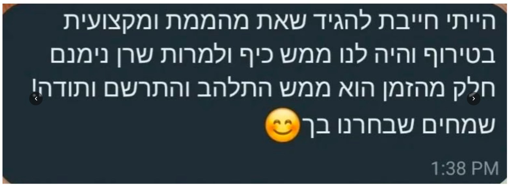
שלב 1 מתוך 3
כמה שאלות קצרות ונקבע
פחות מדקה — ובסוף נקבע שיחת היכרות, ללא עלות וללא התחייבות. ככה אני מגיעה לשיחה כשאני כבר מבינה את הפרויקט שלכם.
ככה אני מגיעה לשיחה כשאני כבר מכירה את היקף הפרויקט
✓
מעולה, נשאר רק לבחור זמן
בחרו מהיומן שלי את הזמן שנוח לכם
היומן של נטע
ימים פנויים לשיחה
הפגישה תירשם על שם ·
עוד רגע, למי לרשום את הפגישה?
הפגישה נקבעה!
נשלח לכם אישור בוואטסאפ 🤍
🤍
תודה שמילאתם!
הפגישה שלנו נקבעה. אישור עם כל הפרטים בדרך אליכם בוואטסאפ. בינתיים מוזמנים להתרשם מהפרויקטים.
לפני ואחרי
גררו את הידית וגלו את השינוי
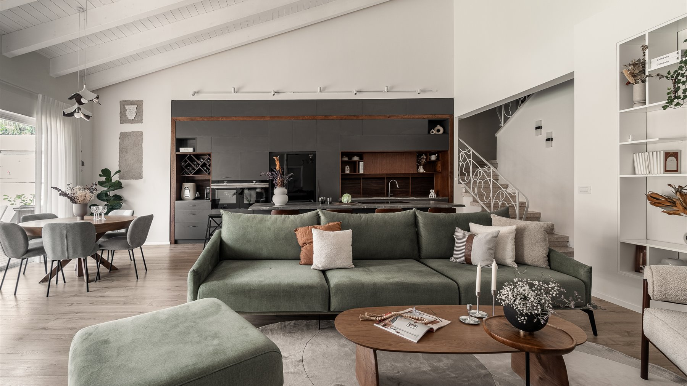
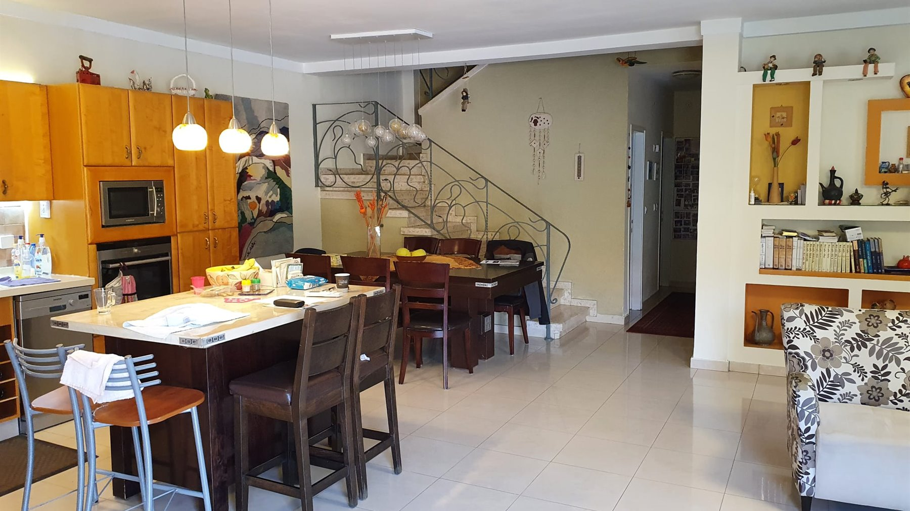
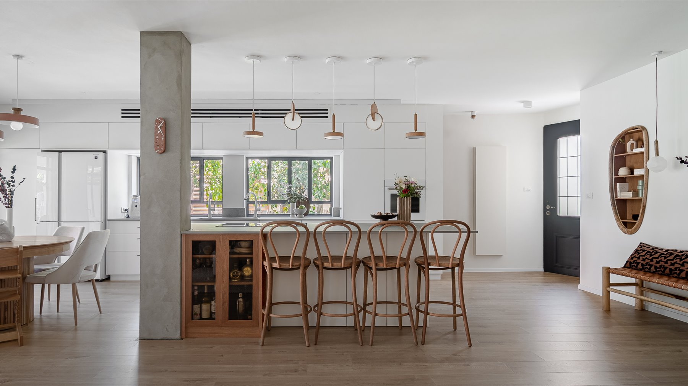
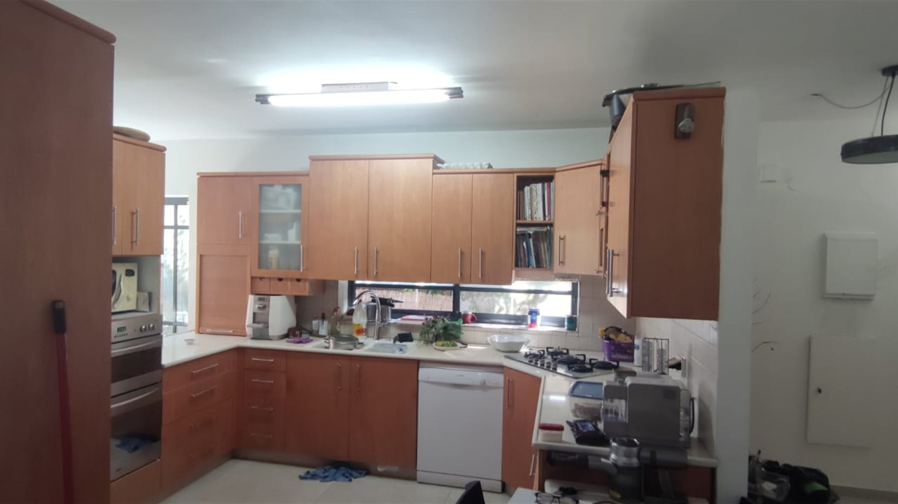
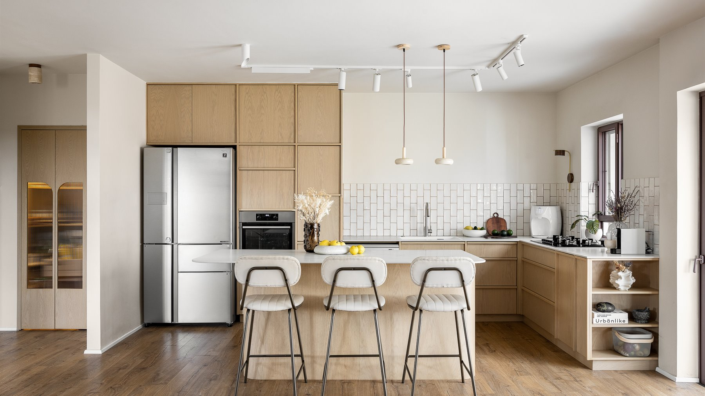
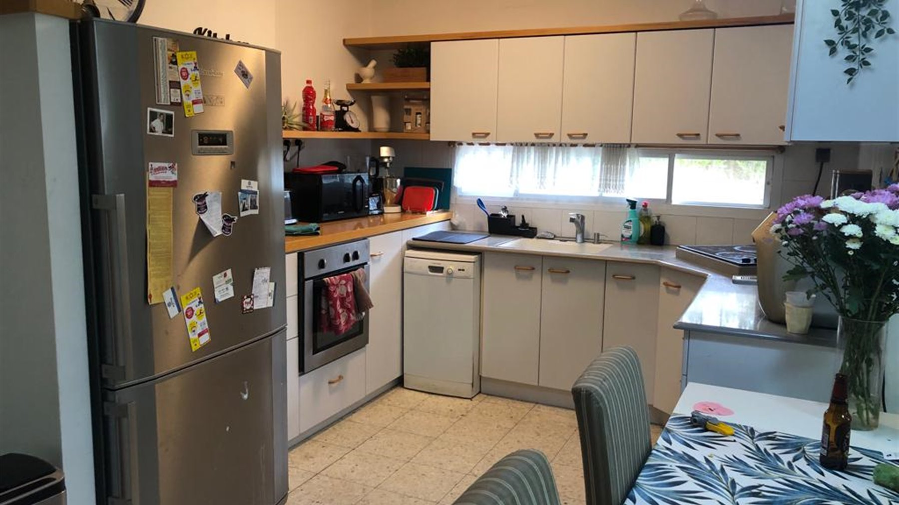
Portfolio
מתוך הפרויקטים שלי


המלצות
מה לקוחות מספרים
במילים שלהם, בלי עריכה.
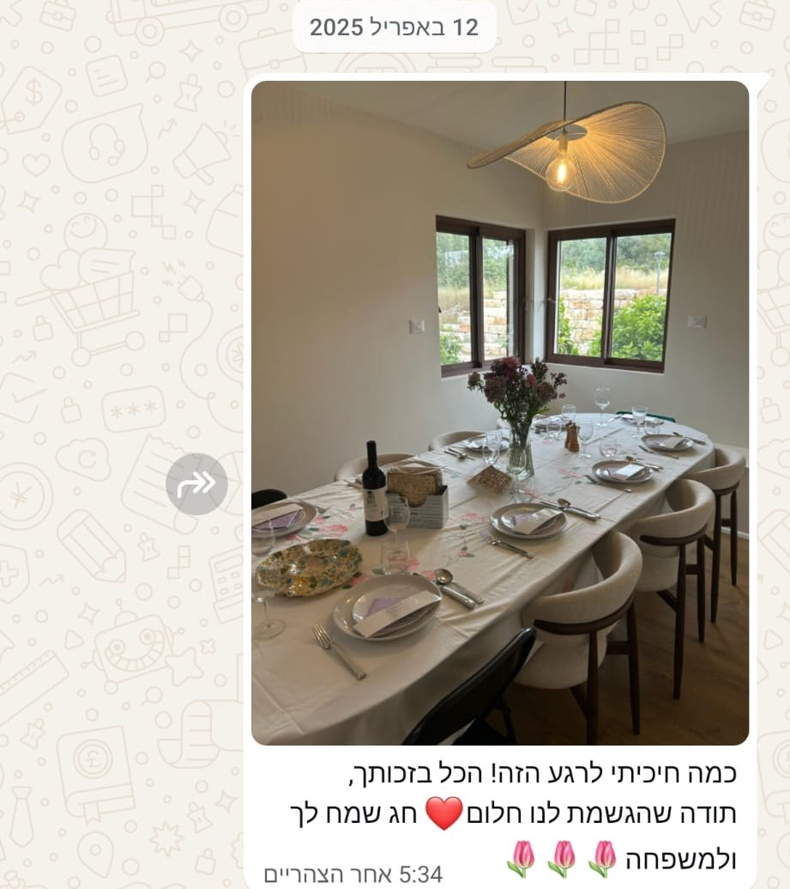
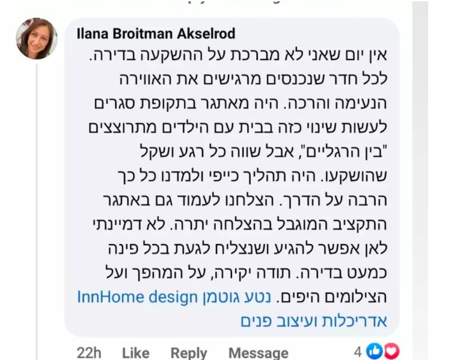
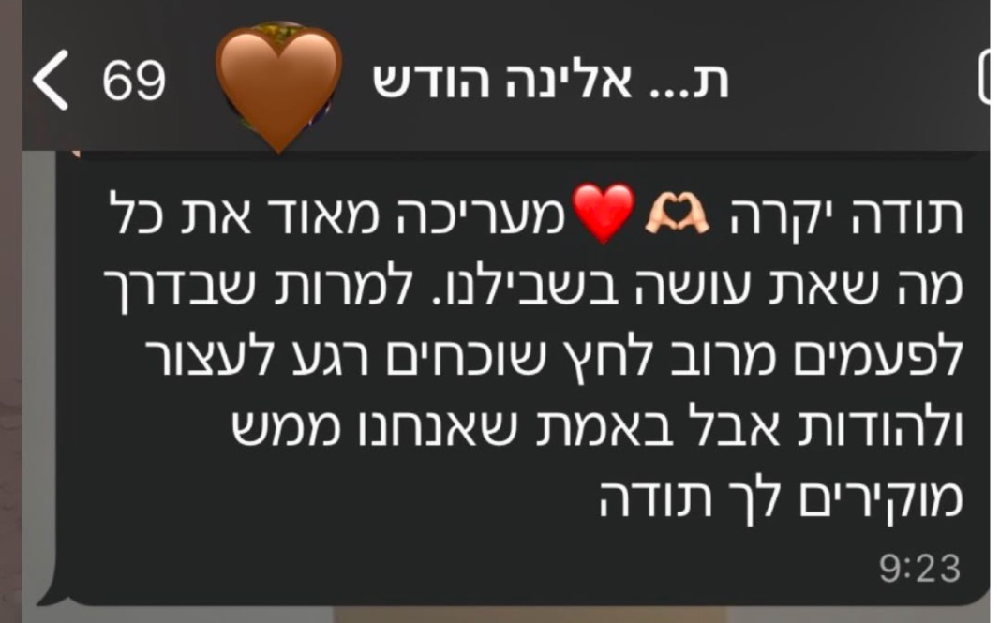
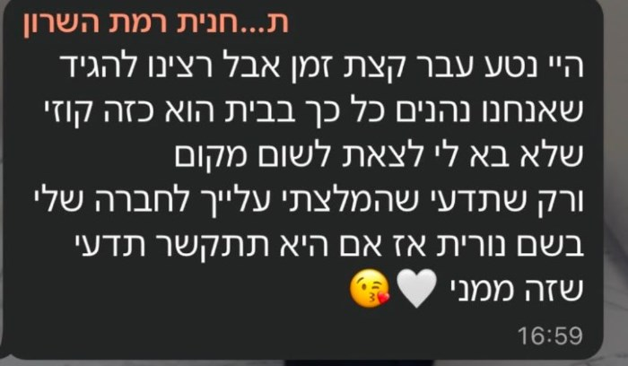
הגישה שלי
בכל בית אותו אני מתכננת אני קודם כל רואה אתכם, את האנשים שיחיו בו, את מי שאתם, את מה שחשוב לכם, ואת מה שעושה לכם הכי טוב. יחד נבנה חלום שמותאם בדיוק אליכם. אני כאן כדי לוודא שהבית יהפוך למקום שמרחיב לכם את הלב כל יום מחדש